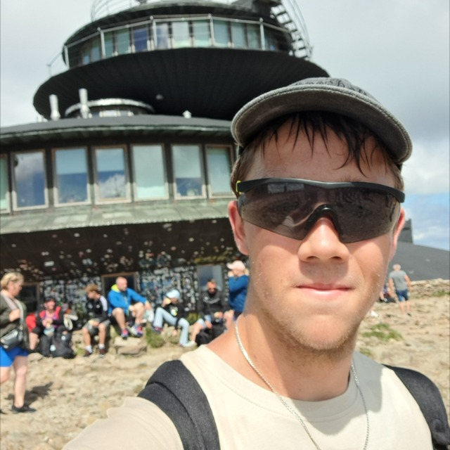

Nie odbierasz telefonu na budowie? Odbierze go asystent.
Asystent głosowy dla ekip remontowych i małych firm usługowych. Gdy nie możesz odebrać, rozmawia z klientem, zbiera imię, miasto i osiedle oraz opis zlecenia, a zgłoszenie dostajesz e-mailem lub na Telegramie.
Cztery kroki, zero komplikacji
- Klient dzwoniJesteś na budowie i nie odbierasz.
- Przejmuje asystentPo kilku sygnałach połączenie przechodzi do asystenta. Informuje klienta, że jest asystentem AI, a rozmowa jest nagrywana.
- Zbiera danePyta o rodzaj prac, miasto i osiedle, termin startu oraz imię. Nie podaje cen i nie obiecuje terminów.
- Dostajesz zgłoszenieZ danymi klienta, e-mailem lub na Telegramie. Oddzwaniasz, kiedy możesz.
Działa tylko na połączenia, których sam nie odebrałeś. Wyłączasz je jednym kodem w telefonie, kiedy chcesz.
Posłuchaj, jak to brzmi
Dwie przykładowe rozmowy z asystentem. Nagrania są testowe, klienta gram ja. Nazwa firmy i imię szefa są przykładowe.
Asystent odbiera, przedstawia się jako AI i mówi, że rozmowa jest nagrywana. Zbiera rodzaj prac, miasto i osiedle, termin startu oraz imię. Na końcu podsumowuje zgłoszenie jednym zdaniem. Całość trwa mniej niż minutę.
Klient od razu pyta o koszt. Asystent nie podaje kwot ani widełek, wyjaśnia, że wycenę przygotowuje szef, i wraca do zbierania danych. Zgłoszenie jest oznaczone jako pilne.
Uwaga: W prawdziwej konfiguracji asystent używa nazwy Twojej firmy, Twojego imienia i Twoich zasad dotyczących wyceny i oddzwonienia.
Kilka informacji, resztą zajmuję się ja
Odpowiedzi zajmą Ci około 10 minut. Ja ustawiam asystenta do 3 dni roboczych od otrzymania odpowiedzi. Od Ciebie potrzebuję odpowiedzi na te pytania (głosówką albo tekstem):
- Operator i numer do przekierowania. U jakiego jesteś operatora (Orange, Play, Plus, T-Mobile, inny) i jaki numer przekierować? Od operatora zależy kod włączający przekierowanie.
- Gdzie wysyłać zgłoszenia. E-mail (jaki adres) czy Telegram?
- Nazwa firmy i imię. Jak asystent ma przedstawiać firmę i jak ma mówić o Tobie (np. „pan Marek”)?
- Zakres prac. Wymień wszystko, co wykonujesz. Czego nie wymienisz, tego asystent powie klientowi, że firma nie robi, więc podaj pełną listę.
- Obszar działania. Gdzie jeździsz? I czy chcesz dostawać zgłoszenia spoza obszaru, np. przy dużych zleceniach (tak/nie)?
- Dni i godziny pracy.
- Odpowiedź o cenę. Co asystent ma mówić, gdy klient pyta o koszt? Zwykle: „wycenę przygotowuje szef po oględzinach”. Asystent nie podaje kwot ani widełek.
- Odpowiedź o oddzwonieniu. Co mówić klientowi o oddzwonieniu w godzinach pracy i poza nimi? Asystent nie obiecuje konkretnej godziny.
Czego nie potrzebuję: dostępu do Twojego kalendarza, kont, haseł ani danych Twoich klientów z innych źródeł. Potrzebne jest tylko przekierowanie połączeń nieodebranych, które włączasz kodem w telefonie.
Zanim ruszymy: przygotowuję konfigurację na podstawie Twoich odpowiedzi i pokazuję Ci ją do sprawdzenia. Potem akceptujesz krótki regulamin i umowę powierzenia danych, odpisując AKCEPTUJĘ. Dopiero wtedy włączasz przekierowanie.
Darmowy test 14 dni
Dopiero zaczynam i szukam kilku ekip remontowych do darmowego testu.
- 14 dni za darmo, bez zobowiązań
- Od Ciebie: około 10 minut na odpowiedzi na kilka pytań. Ja ustawiam asystenta do 3 dni roboczych.
- Wyłączysz usługę w każdej chwili
- Po 14 dniach pokazuję, ile zgłoszeń przechwycił asystent, a Ty decydujesz, czy zostajesz
Stała kwota, bez dodatkowych opłat. Szczegóły płatnej wersji ustalamy po teście.
Napisz do mnieKto za tym stoi

Cześć, jestem Łukasz Depta. Buduję asystentów głosowych, którzy odbierają telefony w małych firmach usługowych.
Pracuję zdalnie, całość działa przez przekierowanie telefonu, więc nie muszę nigdzie przyjeżdżać. To nowa usługa i właśnie dlatego testuję ją za darmo z kilkoma ekipami remontowymi. Odsłucham każde nagrane połączenie w pierwszych dniach testu i będę reagować na uwagi.
Najczęstsze pytania
Czy klient będzie wiedział, że rozmawia z AI?
Tak. Asystent informuje o tym na początku rozmowy i mówi, że rozmowa jest nagrywana.
Co z danymi moich klientów?
Dane z rozmów trafiają do Ciebie. Przetwarzają je tylko dostawcy techniczni wymienieni w umowie powierzenia, a nagrania są usuwane po 30 dniach.
Co jeśli asystent coś źle zrozumie?
Odsłuchuję nagrania, poprawiam konfigurację, a Ty możesz wyłączyć usługę w każdej chwili.
Czy muszę zmieniać numer albo kupować sprzęt?
Nie. Potrzebne jest tylko przekierowanie połączeń nieodebranych, które włączasz kodem w telefonie.
Czy asystent podaje ceny?
Nie. Asystent nie podaje cen, wycen ani widełek. Na pytanie o koszt mówi, że wycenę przygotowujesz Ty (np. po oględzinach). Wycenę zawsze robisz Ty.
Co jeśli klient zadzwoni w sprawie czegoś, czego nie robię?
Asystent odpowiada tylko w zakresie prac, który ustalasz. Jeśli klient pyta o coś spoza zakresu, informuje, że firma tego nie wykonuje.
A co ze zleceniami spoza mojego obszaru?
Sam decydujesz. Asystent może przyjąć zgłoszenie i oznaczyć je jako spoza obszaru, a Ty wybierasz, czy chcesz je zrealizować.
Czy dostanę gwarancję, że każdy klient zostanie obsłużony?
Nie. To wsparcie, a nie gwarancja: asystent zbiera zgłoszenia, a oddzwaniasz Ty.
Porozmawiajmy
Łukasz Depta
- WhatsApp: +48 732 530 024
- E-mail: lukaszdepta09@icloud.com